History and statement of the theorem: Biostatistics is a mathematical discipline based on statistics applied to living organisms (Vergnault, 2013). In ecology, the mathematical formulation of ecological and biological variables enables in-depth analysis of ecosystem functioning (e.g., population dynamics, quantitative ecology) (Zuur et al., 2007). Since its inception in the 17th century, many theorists have studied the subject, and today biostatistics is at the heart of our understanding of the living world (Williams, 2017). One of them, Thomas Bayes, is at the origin of one of the most widely used branches of biostatistics: Bayesian statistics. This 18th-century English pastor, who wore many hats (mathematics, geometry, theology, etc.), developed a central probability theorem known as Bayes’ Theorem (Droesbeke et al., 2002). The need to create new statistics is linked to Thomas Bayes’ astonishing life experience, as he navigated between belief and science. What’s more, in the eighteenth century, religion was still at the heart of everyday life throughout Europe, regardless of denomination (in this case, the Anglican Church) (Bellhouse, 2004). The mathematician was therefore faced with the question of how to formulate probable scientific hypotheses, including random parameters and admitting the unknown, a priori, of an experiment. Implicitly, this means that it is necessary to consider the results of the test even before exploiting the data (Cornfield, 1967). It is formulated in such a way that for (An) a complete system of events, all of non-zero probability, for any event Y, we have (Traonmilin and Richou, 2018): \[ P(\theta \mid Y) = \dfrac{P(Y \mid \theta) \cdot P(\theta)}{P(Y)} \] It therefore states the relationship between the probability of one event (A) occurring and the probability of another event (B) occurring. Bayesian theory is applied upstream of the drafting of statistical hypotheses, hence the a priori terminology often used to describe this approach (Puga et al., 2015). The benefits of this technique for ecology: Bayesian statistics were shelved for almost two centuries, as they were too complex to perform and required a great deal of computing power. However, it was in the 1970s and 1980s that Bayesian statistics enjoyed a new lease of life (Traonmilin and Richou, 2018). This new impetus came at a time when the scientific world was becoming increasingly aware of ecological issues (Zimmermann, 2020). Recent discoveries in computing and computing power also made it possible to carry out more advanced analyses, and thus to integrate the use of Bayesian statistics. The democratization of the use of predictive models also contributes to the spread of these probability calculations (Manabe and Smagorinsky, 1967). In the field of ecology, one of the main difficulties in analysing processes operating in ecosystems is the complexity of interactions and the abundance of variables. These same variables are not always observable, and their influence can escape the observer’s gaze (Zuur et al., 2007) . This form of statistics thus makes it possible to create a link between non-visible variables and their observable repercussions on the environment. The main objective of the Bayesian approach is therefore to assess the probability that there is an effect of these unperceived variables (Wikle, 2003). In this study, we attempt to take stock of the use of Bayesian methods in ecology and what they can offer in comparison with so-called “frequency” statistics, through concrete examples using modeling tools.
General theory behind Bayesian approach.
Explanation in the special case of conjugation between prior and posterior
For context first, let’s take a simple example to explain the idea behind the Bayesian method. We want to estimate the mean abundance per \(m^2\) of one fungus in a forest. To do that, we set up some sampling areas in which we count the number of mushrooms. We can simulate the data by taking random observations in a Poisson distribution. Let’s suppose that our study has 200 sampling area. Because it is count data, the number of mushrooms that we will count should follow a Poisson distribution :
n_sample =200# sampling arealbda =5# mean of poisson distributionpois_distr =dpois(1:20, lambda = lbda)plot(pois_distr,type ="h",lwd =2, col ='blue',xlab ="Mushroom Count",ylab =expression(paste( 'Density or ','[y]')) )
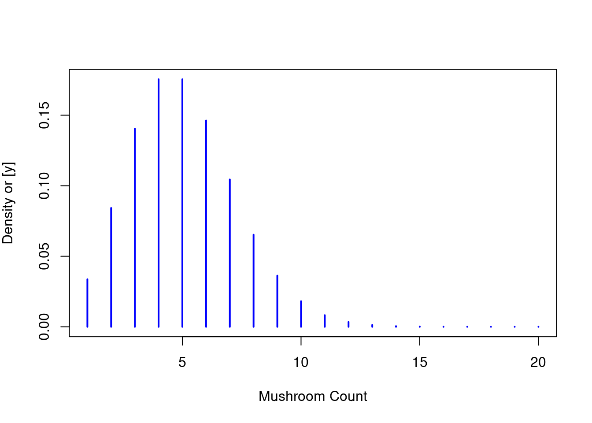
To simulate the sampling campaign we are taking values in this Poisson distribution. In our case, those will be used to estimate the mean number of mushrooms in the forest. (\(\lambda = 5\) is already known because we simulate the data, but in reality, this is an unknown).
So let’s pretend that we don’t know the\(\lambda\). We want to find the the value of the mean number of mushrooms we will call \(\hat{\lambda}\) and we also want to know the probability of this \(\hat{\lambda}\). The Bayesian method will give us a range of estimated mean \(\hat{\lambda}\) and the probability of those values to be true knowing the observation \(Y\). This is what we call the posterior distribution. We can simply write this as follows \([\hat{\lambda} \mid Y]\) which is the probability of \(\hat{\lambda}\) knowing our observations. This probability can be found with the equation : \[ [\hat{\lambda} \mid Y] = [Y \mid \hat{\lambda} ]\cdot[\hat{\lambda}] \] The two components of the right-hand side of the equation are \([Y \mid \hat{\lambda} ]\) the likelihood of our data and \([\hat{\lambda}]\) the prior distribution. First, let’s start with the likelihood. Our data follow a Poisson distribution so our likelihood will follow a Poisson distribution : \[ L(\hat{\lambda} ; y)=[y \mid \hat{\lambda}] = \frac{e^{-\hat{\lambda}}
\cdot\hat{\lambda}^{y}}{y!} \] This is a first good step, but there is a small issue here, this formula isn’t completely usable in this form. This is because it can only take one observation. In English words, it is like asking what is the probability of one observation (one count of mushroom) given a model with a mean \(\hat{\lambda}\). This form isn’t powerful enough because it uses only one observation. What we want is to use all the data that we have, we want to know the probability of all the observations given a model with a mean \(\hat{\lambda}\). To do so we can write the likelihood of all our data \(Y\) as the product of the likelihood of each observation \(y_i\). (We are allowed to do this only because observations are independent) \[ \begin{align} [Y \mid \hat{\lambda}] &= \prod^{n}_{i=1}[y_i \mid
\hat{\lambda}] \\ &=\prod^{n}_{i=1}\frac{e^{-\hat{\lambda}}
\cdot\hat{\lambda}^{y_i}}{y_i!} \\ &\propto \prod^{n}_{i=1}e^{-\hat{\lambda}}
\cdot\hat{\lambda}^{y_i}\\ \end{align} \] As you can see we don’t keep the \(\frac{1}{y_i!}\), it is because we are only interested in the terms that are impacted by \(\hat{\lambda}\). The last form which is proportional to the likelihood function has a more convenient form for the next step. Let’s rearrange the function in a more convenient form \[ \begin{align} \prod^{n}_{i=1}e^{-\hat{\lambda}} \cdot\hat{\lambda}^{y_i}&=
e^{-n \cdot\hat{\lambda}} \cdot\hat{\lambda}^{\sum^{n}_{i=1} y_i}\\ &= e^{-n
\cdot\hat{\lambda}} \cdot\hat{\lambda}^{n \cdot \bar{y}}\\ \end{align} \] The first line just uses the power/exponential multiplication properties. The second line is just a writing simplification that is common in other resources, \(mean(y)=\bar{y} = \frac{1}{n}\sum_{i=1}^n \Rightarrow n\cdot \bar{y} = \hat{\lambda}^{\sum^{n}_{i=1} y_i}\). Now we want to find the prior distribution of \(\hat{\lambda}\). First, we have to choose the distribution family of our prior. We will use a Gamma distribution. We are using this one because it lets the prior and the posterior have the same distribution family, it is called conjugate distributions. The prior is called a conjugate prior for the likelihood function. This means that the prior function and the likelihood function have the same form! And this means that we can simplify! let’s try it : \[ \begin{align} [\hat{\lambda}]&\sim Gamma(\lambda,\alpha_p,\beta_p) \\ &=
\lambda^{\alpha_p -1}\frac{\beta_p^\alpha\cdot e^{-\beta_p
\lambda}}{\Gamma(\alpha_p)} \propto \lambda^{\alpha_p -1} \cdot e^{-\beta_p
\lambda} \end{align} \] Same as the likelihood, we are only interested in the term that varies with \(\hat{\lambda}\) so we remove \(\frac{\beta^\alpha}{\Gamma(\alpha)}\) and keep the proportional formula of the prior. We can now find the real formula of our posterior distribution. \[ \begin{align} [\lambda \mid y] &= [y \mid \lambda]\cdot[\lambda] \\ [\lambda
\mid y] &\propto e^{-n \cdot\lambda} \cdot\lambda^{n \cdot \bar{y}} \cdot
\lambda^{\alpha_p -1} \cdot e^{-\beta_p \lambda}\\ [\lambda \mid y] &\propto
e^{-\beta_p \lambda-n\lambda} \cdot\lambda^{n\bar{y}+\alpha_p -1} \\ [\lambda
\mid y] &\propto e^{-\lambda (\beta_p +n)} \cdot\lambda^{n\bar{y}+\alpha_p -1}\\
\end{align} \] Does the last formula remind you of something familiar? That’s right it is a Gamma distribution! This is the magic of the conjugate distributions. We can now write : \[ \begin{align} [\lambda \mid y] &\propto e^{-\lambda \beta}
\cdot\lambda^{\alpha -1}\\ [\lambda \mid y] &\sim Gamma(\alpha_p +n\bar{y},
\beta_p +n) \end{align} \] We can do some simulations to show the results. We are looking for the probability of \(\hat{\lambda}\), so for the computation we create a vector of all \(\hat{\lambda}\) for which we want to know the probability:
lambda_hat <-seq(0,10, by =0.01)
And now, in order to compare them, we compute the distribution of the prior and the posterior (which are both following a gamma distribution) with an increasing amount of sample:
alph =1bet=1par(mfrow =c(2,3))n_obs =0for(n_obs inlist(0,1:5,1:10,1:50,1:100,1:200)){# prior distribution l_prior =dgamma(lambda_hat, shape = alph, rate = bet)# posterior distribution l_post =dgamma(lambda_hat, shape = alph +sum(Y[n_obs]), rate = bet +max(n_obs))plot(lambda_hat,l_prior, ylim =c(0,max(c(l_post,l_prior))),type ='l', lwd =2, col ='orange',xlab =expression(lambda),ylab =expression(paste('[', lambda, '|y]')) )lines(lambda_hat,l_post, type ='l',lty =3, lwd =2, col ='purple')abline(v =5, lty =2, lwd =2)title(paste("n = ",max(n_obs)))}
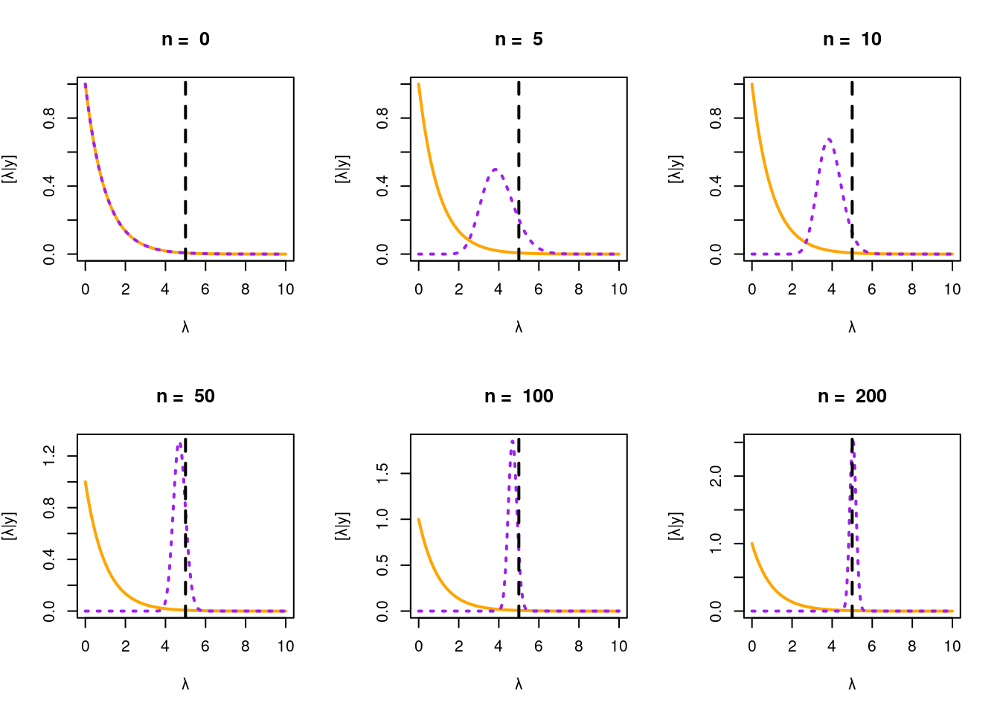
When we add no data in the computation of the posterior, it is normal that we don’t see any modifications from the prior. Adding 5 observation already bring some good information, the prior and the posterior have no longer the same shape and we have a better estimation of the true \(\lambda\). Increasing the number of data gives us a better approximation of the true mean. The density of probability is also higher with a lot of data because we have more confidence in the approximation.
Prior Selection in Ecology
The role of prior knowledge
In Bayesian statistics, prior knowledge and beliefs play a central role in the formulation and interpretation of Bayesian models. As explained before, the fundamentals of Bayesian inference lies in combining prior information with observed data to obtain updated or posterior probabilities.
Bayesian analyses differ from frequentist analyses by incorporating prior information via conditional probabilities, known as Bayes’ rule (Nathan P. Lemoine, 2019): \[\frac{[\theta]\cdot[Y\mid\theta]}{[Y]}=[\theta\mid Y]\] With Pr(θ) = the probability of the parameter or hypothesis θ based on prior information Pr(Y|θ) = the likelihood of the data conditioned on the hypothesis Pr(Y) = the normalization constant Pr(θ|Y) = the posterior probability of the of the hypothesis conditioned on the observed data.
Incorporating existing information to a data set can be based on previous studies, expert opinions, historical data or simply known subjective beliefs. It will allow the future model to avoid over-fitting and favor a more plausible and simple estimation.
Informative and non-informative priors
Use of informative priors: In practice, we want to base our decisions on all available information. Therefore, it is considered responsible to include informative priors in applied research whenever possible. Priors allow you to combine information from the literature, from the data, or to combine information from different datasets.
Use of non-informative priors: In basic research where the results should only reflect the information in the current dataset. Results from a case study can be used in a meta-analysis which assumes independence between the different included studies.
An illustration of how two different priors affect the posterior distribution in a Beta-Binomial model:
# for non-informative uniform prior# Define the range of theta valuestheta <-seq(0, 1, by =0.01)# Define the number of trials and successesn <-10x <-5# Calculate likelihood, prior, and posterior for non-informative uniform priorlikelihood <-dbinom(x = x, size = n, prob =theta)prior_uniform <-dunif(min =0, max =1,x = theta)posterior_uniform <- likelihood * prior_uniform # Create data frame for plottingdf_uniform <-data.frame(theta, likelihood, prior_uniform, posterior_uniform)# Plotting the graph graph1 <-ggplot(data = df_uniform, aes(x = theta)) +geom_line(aes(y = posterior_uniform, color ="Posterior"), linewidth =1) +geom_line(aes(y = likelihood, color ="Likelihood"), linetype ="dashed", linewidth =1) +geom_line(aes(y = prior_uniform, color ="Prior"), linewidth =1) +labs(title ="With Non-informative Uniform Prior",x ="Theta (Probability of Success)",y ="Density",color ="Legend") +scale_color_manual(values =c("black",'purple', "orange"),labels =c("Likelihood","Posterior", "Prior"))+ main_theme ## for highly informative uniform prior# Calculate new prior, and posterior for highly informative priorprior_informative <-dbeta(theta, 2, 2)posterior_informative <- likelihood * prior_informative# posterior_rescaled <- posterior_informative * (max_likelihood / max_posterior) * scale_factor_posterior# # Create data frame for plottingdf_informative <-data.frame(theta, likelihood, prior_informative, posterior_informative)# Plotting the graph graph2 <-ggplot(data = df_informative, aes(x = theta)) +geom_line(aes(y = posterior_informative, color ="Posterior"), linewidth =1) +geom_line(aes(y = likelihood, color ="Likelihood"), linetype ="dashed", linewidth =1) +geom_line(aes(y = prior_informative, color ="Prior"), linewidth =1) +labs(title ="With Highly Informative Prior",x ="Theta (Probability of Success)",y ="Density",color ="Legend") +scale_color_manual(values =c("black", 'purple', "orange"),labels =c("Likelihood", "Posterior", "Prior"))+ main_themegraph1
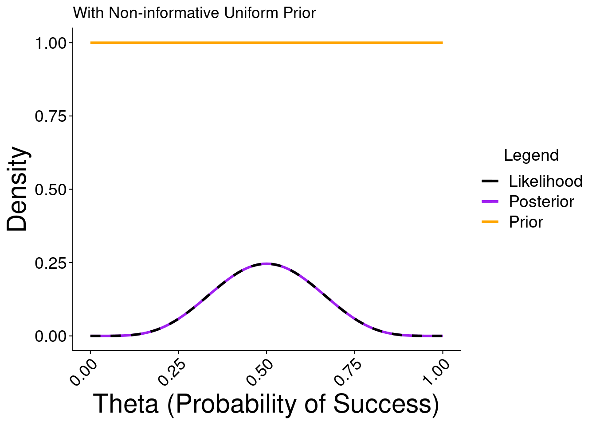
graph2
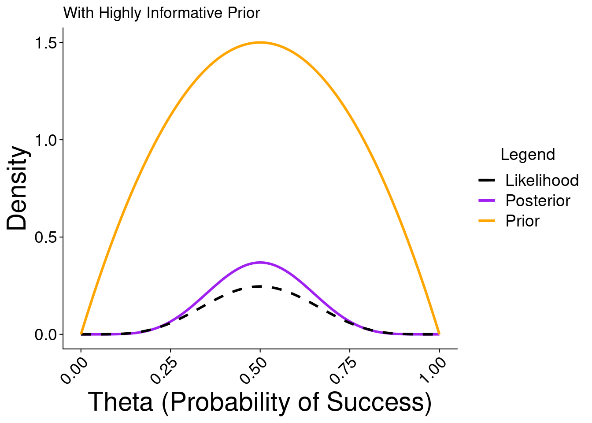
Here we illustrate the posterior distribution with a non informative prior is equal to the likelihood. But with knowledge, we can take an informative prior,it is shown on the second figure where we have a strong prior center on a value of success of 0.5, thus the posterior isn’t equal to the likelihood anymore. This emphasizes that the impact of the chosen prior influences the posterior distribution with both its shape and the quantity of information it holds compared to the information within the data.
When approximation by computation is needed
In Bayesian statistics, as mentioned earlier, the goal is to update our beliefs about the parameters of a model by combining prior knowledge with the observed information in our collected field data. However, the direct calculation of the posterior distribution can often be challenging to compute analytically, especially in complex models. Resorting to conjugate distribution laws is one solution to overcome the problem, but this is not always feasible. This is where Markov Chain Monte Carlo (MCMC) algorithms come into play to estimate the posterior distributions of parameters. There are multiple MCMC algorithms (Metropolis-Hastings, Gibbs sampler, Hamiltonian Monte Carlo), each with its own advantages and disadvantages, and the choice of the algorithm depends on the application scenario. However, they all share the same theoretical foundation. The essential idea of an MCMC algorithm is to create a sequence of dependent random numbers via a Markov chain. When the chain reaches equilibrium (stationary state), it forms a sampling within the posterior distribution, allowing the calculation of quantities of interest such as means, variances, quantiles, and so on.
Metropolis-Hastings algorithm : implementation
Let’s implement the algorithm to try to understand how it works. In the following lines, we will describe the various steps of the Metropolis-Hastings algorithm along with the corresponding R code lines.
Step 1 : Definition of the likelihood function and the prior law
As with the beginning of any Bayesian statistical analysis, we first pose the problem and define the likelihood probability distribution and the prior distributions of the parameters to be estimated. We define the likelihood as a binomial distribution with parameters \(N\) as the total population size and \(p\) as the probability of capturing individuals. It is this parameter \(p\) that we aim to estimate. We make the assumption that we have no prior information about this parameter, so we choose a non-informative prior: \[ p \sim \beta(1,1) \]
# [y | p]likelihood<-function(p, y, N){if(p <0| p >1) {return(0) } else {return(dbinom(x = y, size = N, prob = p)) }}
We will now aim to move, so we need to define a function to determine a candidate position. Here, we randomly draw this position from a normal distribution with a mean of \(p_c\), which is the current position, and we arbitrarily choose a standard deviation value.
Once we have this candidate position, we need to decide whether to keep it or not. The decision criterion to calculate is the Metropolis-Hastings ratio \(r\), which we define as: \[ r = \dfrac{[p_{t+1} \mid Y]\space \cdot \space [p_{t+1}] \space \cdot \space
g(p_{t+1} \mid p_{t})}{[\lambda_{t} \mid Y]\space \cdot \space [p_{t}] \space
\cdot \space g(p_{t} \mid p_{t+1})} \] where \(g(p_{t+1} \mid p_{t})\) is the probability of transitioning from the candidate position to the current position.
MH.ratio <-function(p_c,p, y, N){ ratio = (likelihood(p_c, y, N) *prior.dist(p) *proba_move(p, p_c))/ (likelihood(p, y, N) *prior.dist(p) *proba_move(p_c, p))return(ratio)}
Step 4 : Decide if we go to the candidate position or not
To choose if we keep the candidate position \(\lambda_{t+1}\) we define \(u\) : \[ u \sim unif(0,100) \] If \(u\) is greater than the ratio \(r\), we remain at the current position; conversely, if \(u\) is less than \(r\), we transition to the candidate position.
There is a parameter we haven’t discussed in this function, and that’s \(thin\). It means that we will only save the samples within the chain at intervals of \(thin\). This is due to the fact that the samples are correlated with each other as they depend on the previous position and therefore do not accurately reflect the distribution. Consequently, if we want independent samples, we must discard the majority of samples and keep only one sample every \(thin\) steps, with \(thin\) being “sufficiently large.”
`stat_bin()` using `bins = 30`. Pick better value with `binwidth`.
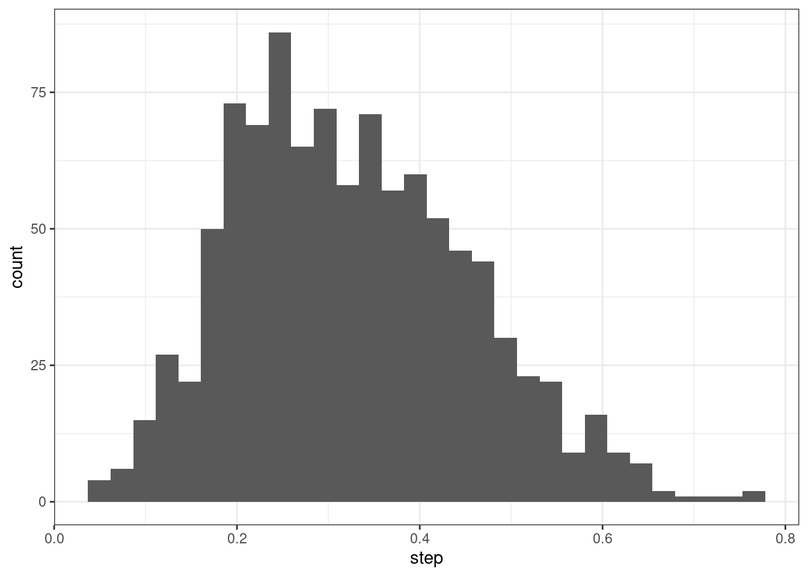
alph =1bet=1
Both graphs represent the sampling of \(p\) in its marginal posterior distribution. This is possible when a sufficient number of iterations is used, allowing the Markov chain to reach a stationary state.
The case of multiple parameters
And how does it work in multiple dimensions? Obviously, above two parameters to estimate, visualization becomes impossible. So, to keep it visual, we will only perform an example with one additional parameter to estimate. We will use a simple example: estimating a population mean and standard deviation. We’ll define some population-level parameters, collect some data, then use the Metropolis-Hastings algorithm to simulate the joint posterior of the mean and standard deviation. Let’s start by simulating some data.
# population level parametersmu <-7sigma <-3# collect some data (e.g. a sample of heights)n <-50x <-rnorm(n, mu, sigma)
Then, as previously, we define the likelihood and the prior distributions for the parameters to be estimated \(\mu\) and \(\sigma\): \[ Y \sim N(\mu,\sigma) \]
In the context of the Metropolis-Hastings algorithm, the focus is typically on probability ratios rather than the probabilities themselves. Logarithms simplify calculations and improve numerical stability in this context, especially for the ratio calculation. Indeed, as mentioned earlier, we performed: \[ r_t = \dfrac{[\theta_{t+1} \mid Y]\space \cdot \space [\theta_{t+1}] \space
\cdot \space g(\theta_{t+1} \mid \theta_{t})}{[\theta_{t} \mid Y]\space \cdot
\space [\theta_{t}] \space \cdot \space g(\theta_{t} \mid \theta_{t+1})} \] Which is equal to : \[ log(r_t) = [\theta_{t+1} \mid Y]\space \cdot \space [\theta_{t+1}] \space +
\space g(\theta_{t+1} \mid \theta_{t}) - [\theta_{t} \mid Y]\space \cdot \space
[\theta_{t}] \space + \space g(\theta_{t} \mid \theta_{t+1}) \]
# for the compute of the ratio# poseteriorpost <-function(x, mu, sigma){ll(x, mu, sigma) +pmu(mu) +psigma(sigma)}# Probabilité de transition multivariée (loi normale)transition_prob <-function(theta_candidate, theta_current, proposal_sd =0.1) {dnorm(theta_candidate, mean = theta_current, sd = proposal_sd, log =TRUE)}# to compute a new candidatejump <-function(x, dist = .2){ # must be symmetric x +rnorm(1, 0, dist)}
Algorithm implementation
iter =10000theta.post <-data.frame(mu =rep(NA,iter), sigma =rep(NA,iter))theta.post[1, 1] <-9theta.post[1, 2] <-5for (t in2:iter){# theta_star = proposed next values for parameters theta_star <-c(jump(theta.post[t-1, 1],0.1),jump(theta.post[t-1, 2],0.1))#ratio pstar <-post(x, mu = theta_star[1], sigma = theta_star[2]) pprev <-post(x, mu = theta.post[t-1, 1], sigma = theta.post[t-1, 2]) r <- (pstar+transition_prob(c(theta.post[t-1,1],theta.post[t-1,2]), theta_star, 0.1) )-(pprev+transition_prob(theta_star, c(theta.post[t-1,1],theta.post[t-1,2]), 0.1)) ratio =exp(r[1])# Acceptation or notif(runif(1)<ratio){ theta.post[t, ] <- theta_star } else { theta.post[t, ] <- theta.post[t-1, ] }}
Warning in rgl.init(initValue, onlyNULL): RGL: unable to open X11 display
Warning: 'rgl.init' failed, running with 'rgl.useNULL = TRUE'.
Warning: no DISPLAY variable so Tk is not available
Warning in persp.default(xgrid, ygrid, dgrid, xlab = opt$xlab, ylab = opt$ylab,
: surface extends beyond the box
title("Posterior density")
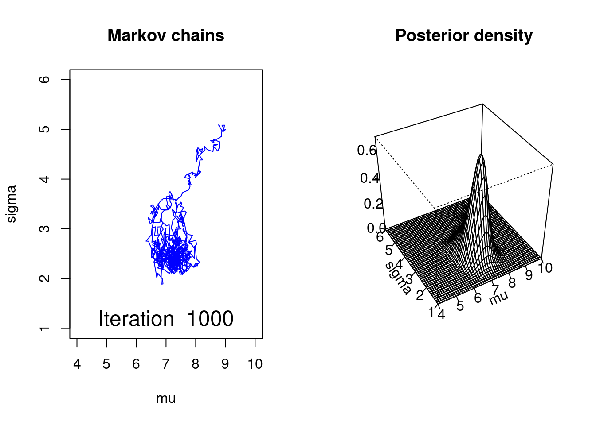
The figure 1 represents the joint sampling of the two parameters. At each iteration, a new pair of parameters is proposed, and the ratio calculation assigns a weight to the proximity of the candidate parameter pair to the prior. Figure 2 represents the joint distribution of the two parameters formed by the sampling. It is from this joint distribution that the marginal posterior distributions of the two parameters arise. Therefore, we can also calculate the statistics (mean, standard deviation, etc.) of interest on these marginal posterior distributions.
Case Studies in Bayesian Ecology
Using JAGS
two parameter example
For this example, we are going to use data taken from a normal distribution. We will estimate the mean and the standard deviation like we did before. But for this example, we will use the software JAGS with the library rjgas. JAGS is a software that lets us build our model to estimate the posterior distribution of parameters that we want. We start by creating the data:
set.seed(1000)Y2 =rnorm(n =200, mean =10, sd =1)hist(Y2)
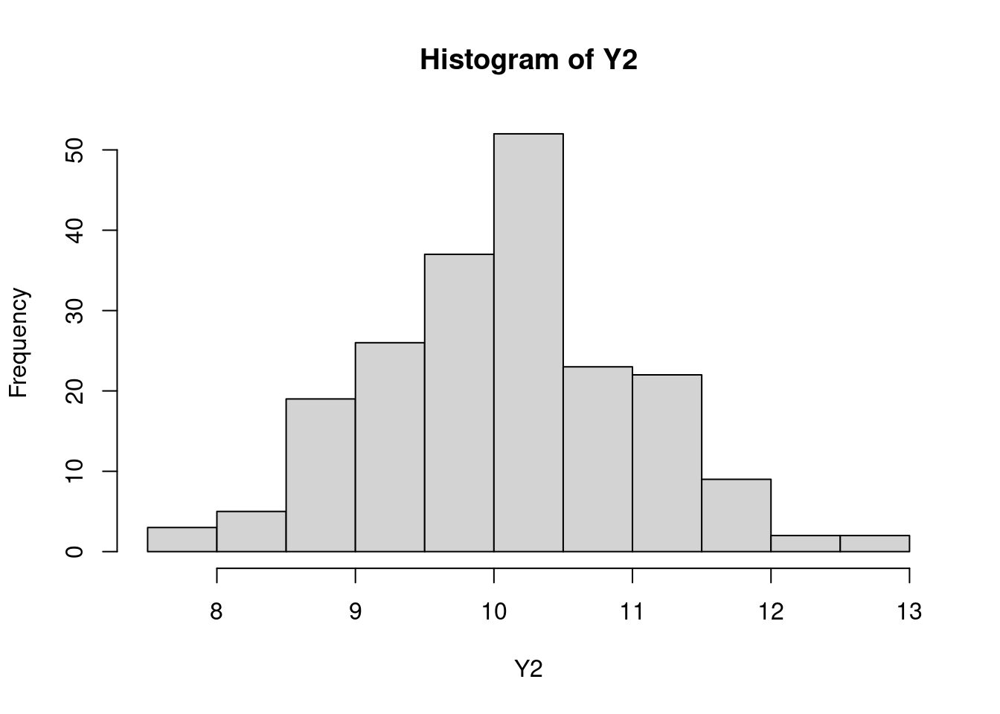
We can suppose here that we want to estimate the mean length and length variation of a snakes species in one dessert. So we sample 200 snakes and measure them, Y2 contain all our samples.
rjags need 3 main component. Fist, the model:
mod1 =" model{ ## model for(i in 1:n_obs){# loop when there is multiple data. (will compute the product of the likelihood) Y2[i] ~ dnorm(m,preci) # likelihood of our data given parameters } ## Prior distribution # All parameters that we want to estimat need a prior distibution m ~ dunif(0, 10**3) sd ~ dunif(0, 10**3) preci <- 1/(sd*sd) # In JAGS dnorm take the precision as input not the standard deviation }"
It looks like R syntax but it is JAGS syntax, which is slightly different for some function. In the model, we setup the prior for each parameter that we want to estimate with m ~ dunif(0, 10**3) and sd ~ dunif(0, 10**3).The uniform probability law is used because we suppose that we don’t have any prior knowledge on the mean and the standard deviation. We give to the model a range of possible value between 0 and 1000 for the mean and the standard deviation. In general for uniform prior we select large upper and lower bound to be sure that the value is included in it. The likelihood is then compute with Y2[i] ~ dnorm(m,preci)). JAGS is not like R because it takes the precision as parameter for the dnorm. Then we loop over all observation, RJAG will automatically make the product of the likelihood of all the data. Our model is complete, we have the priors and the likelihood formula setup to compute the posterior distribution. Second component needed for rjags, the list of data:
data_list1 =list(Y2 = Y2,n_obs=length(Y2))
This list contains all information needed to make the model run, nothing really interesting to say here. Third, the list of initialization:
init_list1 <-list(m =5,sd =2)
JAGS will probably run MCMC algorithm to find the best parameters, those algorithm need values to start. Try to give values that make sense. If you don’t, the algorithm might take more time to converge or JAGS could also give error messages. Now that everything is setup, we can run the model.
mjags1 <-jags.model(file=textConnection(mod1),data=data_list1,inits=init_list1,n.chains =3) # Number of MCMC
Compiling model graph
Resolving undeclared variables
Allocating nodes
Graph information:
Observed stochastic nodes: 200
Unobserved stochastic nodes: 2
Total graph size: 210
Initializing model
We choose to compute 3 Markov chains.
# function to extract mcmcpostSamples1 <-coda.samples(mjags1,variable.names =c("m","sd"),n.iter =10000,thin =10)postSamples_df1 <- postSamples1 %>%ggs()
Always verify if the markov chain are stationary. (otherwise, you will have a bad estimation of the posterior distribution)
postSamples_df1%>%ggplot() +facet_wrap(~Parameter, scales ="free", nrow =2)+geom_line(aes(Iteration, value , col =as.factor(Chain)), alpha =0.3)+scale_color_manual(values = wesanderson::wes_palette("FantasticFox1", n =5))+ main_theme+labs(col ="Chains", x="Iterations")
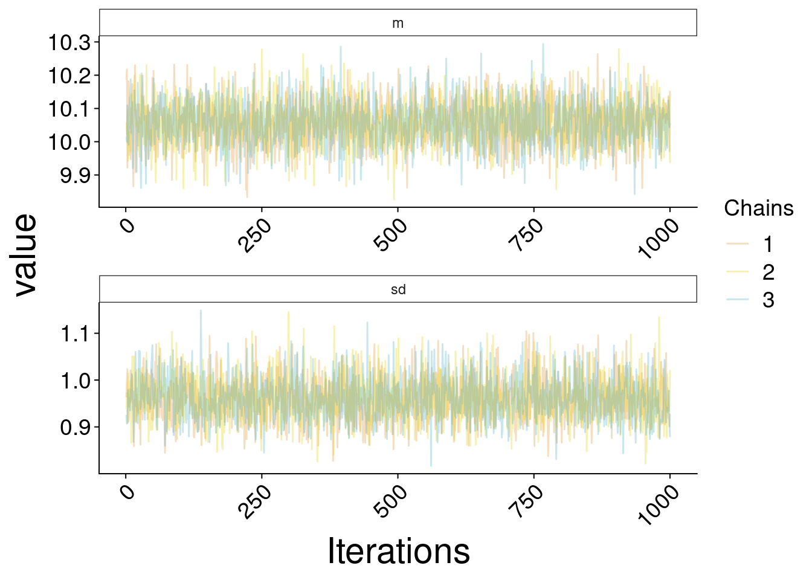
All MCMC seem to be stationary, we can go on.
### Dataframe of estimated and real value of the mean and standard errorref <-data.frame(val=c(mean(Y2),sd(Y2)), Parameter =c("m", "sd"))esti <-data.frame(val=c(mean(postSamples_df1$value[postSamples_df1$Parameter =="m"]),mean(postSamples_df1$value[postSamples_df1$Parameter =="sd"])), Parameter =c("m", "sd"))postSamples_df1 %>%ggplot() +facet_wrap(~Parameter, scales ="free") +geom_histogram(data = postSamples_df1, aes(x= value, y =..density..),bins=60, position ="identity", alpha =0.4, col ='purple4', fill ="white")+scale_fill_manual(values = wesanderson::wes_palette("FantasticFox1", n =5))+geom_vline( aes(xintercept=val), esti, col ='purple1',linewidth=1.2)+geom_vline( aes(xintercept=val), ref,linetype =2, linewidth=1.2)+ main_theme
Warning: The dot-dot notation (`..density..`) was deprecated in ggplot2 3.4.0.
ℹ Please use `after_stat(density)` instead.
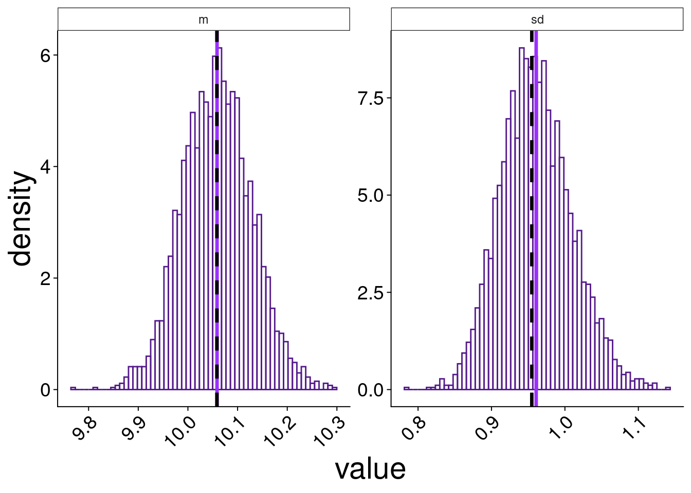
Here we look at the posterior distribution estimated by the 3 chain for the mean and the standard error. Purple full lines represent the means of posterior distributions( \(\hat{m} =\) 10.1 , \(\hat{\sigma} =\) 1) and dark dotted lines are the real value of standard error ( \(\sigma =\){r} round(ref$val[2],1)) and mean( \(m =\) 10.1) of the data inY2. The estimations are really good, which is normal with 200 data.
Multiple class exemple
The next example is a little bit more elaborated. It is almost the same because we are going to estimate means and standard error like the previous one, but this time we have multiple classes in our data. We can suppose that we want to study the length of snakes in five different desserts (that we are going to call A,B,C,D,E for simplicity).
set.seed(1000)y_means =round(runif(n=5, min =5, max =15))n_obs =40Y3 =c()class =c()IDclass =c()ID =c("A","B","C","D","E")for(i in1:length(y_means)){ Y3=c(Y3, rnorm(n = n_obs, mean = y_means[i], sd =2)) class =c(class,rep(ID[i],n_obs)) IDclass =c(IDclass,rep(i,n_obs))}data =data.frame(Y3, class, IDclass)ggplot(data)+geom_point(aes(class,Y3))+geom_violin(aes(class,Y3), alpha =0.2)+ main_theme
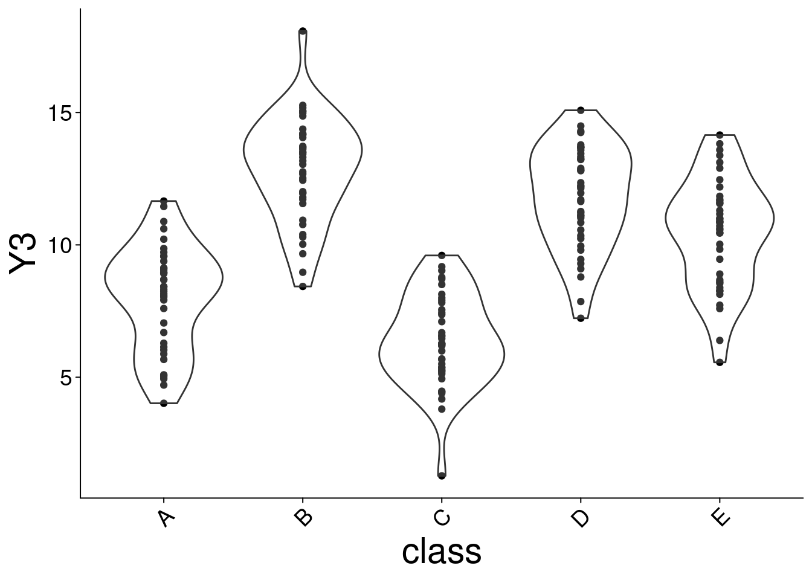
mod2 =" model{ ## model for(i in 1:n_obs){ Y3[i] ~ dnorm(m[IDclass[i]],preci) } ## Prior distribution for(n in 1:n_class){ m[n] ~ dunif(0, 10**3) } sd ~ dunif(0, 10**3) preci <- 1/(sd*sd) }"
For this time we want to estimate 5 different means and we will suppose that standard deviation is the same between each class (but we could also estimate it with respect to the class). To estimate multiple parameters we initiate as much prior as there is class with the loop for(n in 1:n_class){ m[n] ~ dunif(0, 10**3)}. m[IDclass[i]] is here to select the correct estimated mean that is the same class as the data.
data_list2 =list(Y3 = data$Y3, # data vectorn_obs=length(data$Y3), # number of observationsIDclass = data$IDclass, # vector to specify class of each observationn_class =max(data$IDclass) # Number of class)
For this example we add IDclass = data$IDclass that will be used to identify which data belongs to which class and n_class = max(data$IDclass) to specify the number of class.
init_list2 <-list(m =rep(5,5),sd =2)
This is where we initiate the prior. The only change is that we initialize 5 means instead of one with m = rep(5,5). So we have one prior of mean per class. Now we can run the model:
postSamples_df2%>%ggplot() +facet_wrap(~Parameter, scales ="free")+geom_line(aes(Iteration, value , col =as.factor(Chain)), alpha =0.3)+scale_color_manual(values = wesanderson::wes_palette("FantasticFox1", n =5))+ main_theme
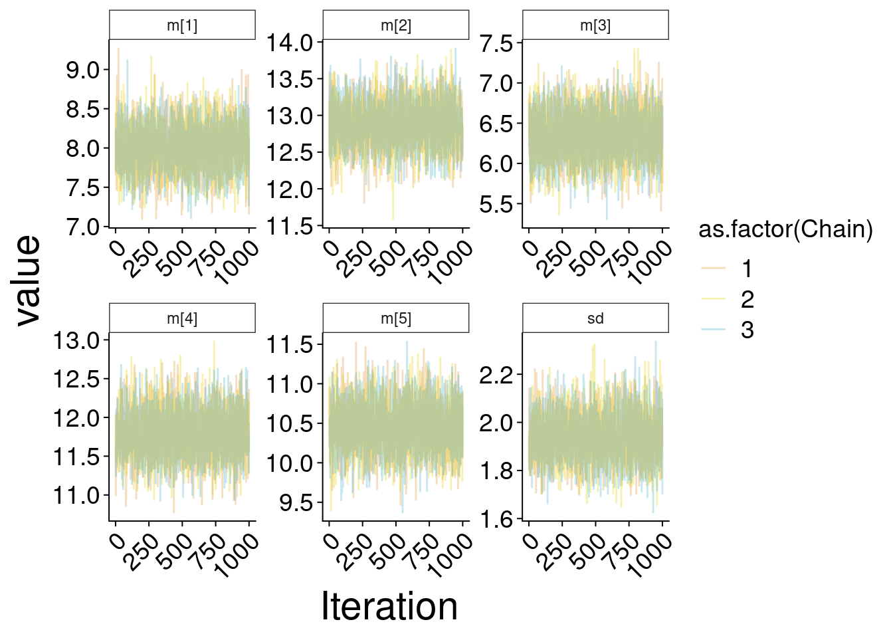
Finally, we look at the results of posterior distribution of the estimated means and the estimated standard deviation.
postSamples_df2 %>%ggplot() +facet_wrap(~Parameter, scales ="free") +geom_histogram(aes(x= value, y =after_stat(density)), col ='purple4',fill ="white", bins =60)+geom_vline( aes(xintercept=val), esti2, col ='purple1',linewidth=1.2)+geom_vline( aes(xintercept=val), ref2,linetype =2, linewidth=1.2)+ main_theme
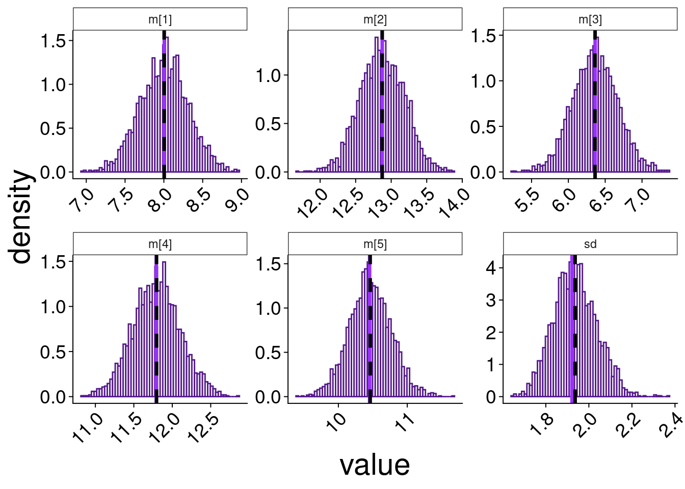
Purple full lines represent the means of posterior distributions and doted line are the true values of the data. The utility to have posterior distribution and not only compute the mean or the standard error is that we can know the probability of each mean or sd values, therefore we have a good estimation of the confidence that we should have when making conclusion on values.
More specific ecological studies that employed Bayesian methods
Predator-prey body size:
For example, predators are often gape-limited, meaning that larger predators should be able to eat larger prey and smaller predators, smaller preys, depending on the size of their mouth. It is known from the existing literature that predators are 2 or 3 times larger than their prey (Trebilco et al. 2013). So, in this example we could use a prior mean of the intercept to a value below zero, like an average predator/prey mass comparison (Wesner and Pomeranz 2021).
Spider abundance according to the presence of fish:
In this example from a study done by Warmbold and Wesner in 2018, they hypothesized that fish would reduce the emergence of adult aquatic insects by eating their larvae, causing a reduction in terrestrial spiders that feed on the adult forms of those insects. The authors used a Bayesian inference approach to estimate the posterior probabilities of each parameter in their models. They preferred Bayesian inference to frequentist inference, because their interest lay in estimating the probabilities of the hypotheses or parameters θ, given the data y, i.e. p(θ|y), rather than the probability of the data given a null hypothesis.The authors based their priors for intercepts on prior knowledge from a pilot experiment. The priors for the intercepts and slopes were assigned as normal distributions, the standard deviations as half-cauchy distributions, and the priors for the scale in the gamma distribution were assigned as exponential distributions.
Ant species diversity
As said before, bayesian inference not only uses the sample data but also any available prior information. In this example from Gotelli and Ellison, 2002, we want to see how many species of ants we can find in sampling grids according to different environment variables. They did simple additive models of richness and models that included all possible interactions. Here, they used the Bayes’ theorem to calculate the posterior probability of the model conditional on the data with explicit explication on the prior from the literature. In this example, they precisely used WinBUGS which implements the MCMC methods with presented before using a Gibbs sampler.
Modeling the life cycle of a fish
The paper shows an integrated life cycle model using Hierarchical Bayesian Models (HBMs) for marine fish species, highlighting larval drift processes, the contribution of several nurseries to recruitment, as well as natural and marine mortality. the Peach. These MBHs, associated with Markov chain Monte Carlo methods, make it possible to incorporate complex demographic models into statistical frameworks, while processing varied data. This approach aims to provide inferences while robustly assessing the uncertainty surrounding parameter estimates and predictions. The widespread use of MBHs in fish population dynamics demonstrates their potential for increasing biological realism.